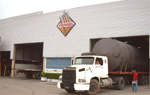

CAIXA D'ÁGUA METÁLICA
| A Fergel fabrica “Reservatórios Metálicos” de diversas dimensões para qualquer capacidade e com aço de diferentes características, conforme as especificações técnicas assinaladas em projetos. O acabamento interno permite a utilização de uma ampla gama de líquidos (água, resinas, óleos e etc.). Resistentes à corrosão e químicos.
 |
 |
|||
|
||||